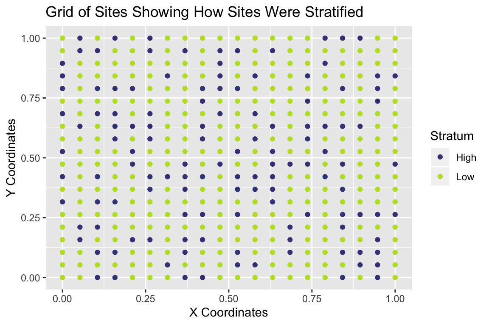
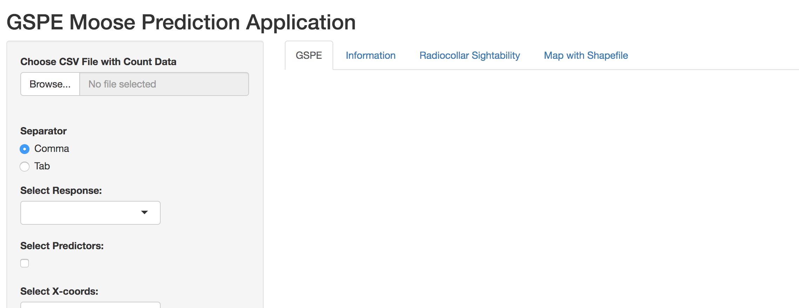
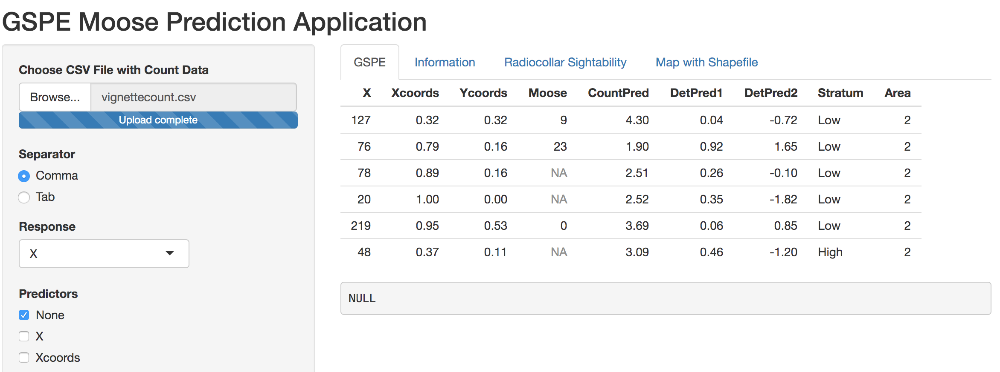
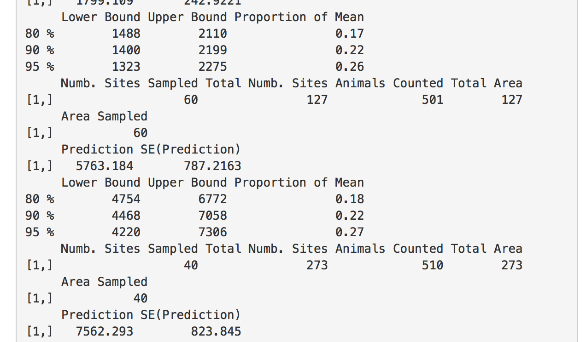
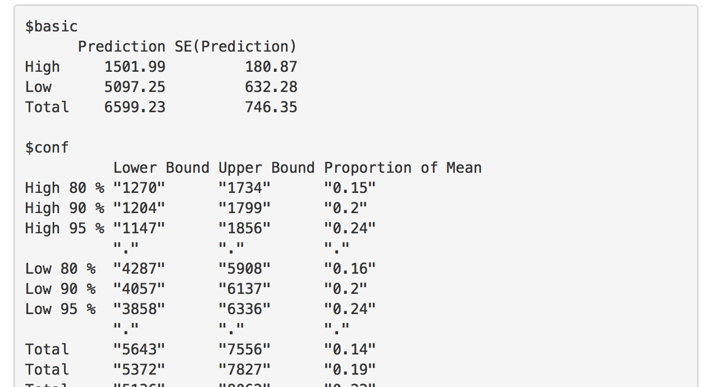

Using the GSPE Shiny App
Matt Higham
2019-07-21
Source:vignettes/ShinyVignette.Rmd
ShinyVignette.RmdIntroduction
The purpose of this vignette is to illustrate how to use the GSPE R Shiny app for moose survey data, both with and without a separate sightability study. There are three primary sections, each building off the previous section. Throughout the Vignette, we will use simulated data that is similar to a survey and sightability trials in March 2017 at the Togiak National Wildlife Refuge. Note, however, that the data and locations are altered for privacy. Though some of the documentation references moose specifically, the app can be used for many ecological studies with count data collected on a finite number of sites.
- Section 1 shows how to obtain a population prediction assuming perfect detection.
- Section 2 shows how to obtain a population prediction assuming constant detection across all sites. This requires the user to have an estimate for mean detection with a standard error.
- Section 3 shows how to obtain a population prediction using radiocollar data with the possibility of site covariates useful for predicting detection. This requires the user to have a separate data set with sightability trials using radiocollared animals.
If using the app for the first time, we recommend making sure that the steps in Section 1 work first before trying to add sightability to the model. Before looking at the Shiny app, let’s first examine the example data set we will be using.
Example Data
As mentioned above, we will use an example data set to illustrate how to use the Shiny app. If desired, one can download the example data set from INSERT URL HERE and follow along. Though we have sightability trials for this particular data set, suppose first that we want to assume perfect detection. Like many moose data sets, the the sites in our example data set are stratified into a “High” stratum and a “Low” stratum. Let’s take a look at the data set.
| Xcoords | Ycoords | Moose | CountPred | Stratum |
|---|---|---|---|---|
| 0.3158 | 0.3158 | 9 | 4.302 | Low |
| 0.7895 | 0.1579 | 23 | 1.901 | Low |
| 0.8947 | 0.1579 | NA | 2.507 | Low |
| 1 | 0 | NA | 2.521 | Low |
| 0.9474 | 0.5263 | 0 | 3.693 | Low |
| 0.3684 | 0.1053 | NA | 3.086 | High |
The data table shows the first six observations of our data set. The first two columns represent spatial x and y coordinates for the centroids of each site, the next column Moose is the observed number of moose on each site with an NA value for any site that is not sampled, CountPred is a continuous predictor for the abundance of moose on each site (like some habitat covariate), and Stratum is the pre-survey stratification scheme into High and Low strata.
Note: Both the R package and the Shiny app assume that any site that is not sampled has NA for the column with the count. If data are input into Excel and unsampled sites have blank cells for the Moose column, then R and Shiny will automatically populate the blank cells with NA’s. So, unsampled sites should have NA or blank count values (not -9999 or NotSampled, etc.) before using the Shiny app.
We might also want to look at a grid to see where our sampled sites are.

We can also look at a grid showing which sites were stratified into the high stratum and which were stratified into the low stratum.
Section 1: Assuming Perfect Detection
Step 1: Load the Shiny app.
You will need to open R or RStudio on your personal desktop and run the following lines of code:
## will also need to install the shiny package
## and the shinyFiles package if you have not done
## so ever before on your current machine.
## You only need to install the packages once. Uncomment the lines
## by deleting the two hashtags.
## install.packages("shiny")
## install.packages("shinyFiles")
##library(shiny)## install the R Package here
devtools::install_git("https://github.com/highamm/FPBKPack2.git")This installs the R package needed to run the Shiny app. Next, we will copy the files that generate the Shiny app onto your personal computer. You may want to modify the destdir argument so that the code creates a folder at a different location of your computer. Currently, running the line of code will create a folder titled “appfolder” on my Desktop.
## running this line should open a web browser with the Shiny app.
runGitHub("Shiny-FPBK", "highamm", destdir = "~/Desktop/appfolder",
launch.browser = TRUE)If all goes well, you should see something pop up in your browser like this:
The major advantage of using this function is that it is portable in the sense that it works for all document formats that knitr supports, so you do not need to think if you have to use, for example, LaTeX or Markdown syntax, to embed an external image. Chunk options related to graphics output that work for normal R plots also work for these images, such as out.width and out.height.
Example:

Let’s first assume that we have perfect sightability. Then, in the Shiny app, we can completely ignore the “Radiocollar Sightability” tab and focus only on the “GSPE” tab.
Step 2: Upload Your Data
Your data should be in a .csv file. Click the Browse button on the Shiny app, finding your .csv file on your local computer. After uploading the data set, you should see a header of the data with the first 6 lines of your .csv file pop up on the main window of the app. Looking at the first 6 lines is a nice way to verify that your data has uploaded correctly.
Tip: If you have a lot of extra variables in your .csv file, the Shiny app will generally be harder to work with. For example, each variable will be a candidate predictor for the total count so there will be a ton of checkboxes under the Select Predictors heading. You might want to consider saving a version of the data with only what you will need in the app (counts, site ID numbers, coordinates, relevant predictors, stratification column, etc.) and get rid of unnecessary columns (notes, for example).
If all goes well, you should see a header of your data appear, as in

Step 3: Change the App Inputs
Next, we need to tell the Shiny app which column in our data has the counts, which columns have covariates for predicting the response (if any), which column has the stratification variable, and which columns have the spatial X and Y coordinates. If the X and Y coordinates are in Latitude and Longitude format, then we also would need to check the box indicating that the coordinates are in that format. The Shiny app converts Lat/Lon coordinates to TM coordinates for spatial prediction.
Note: When including stratification, there are two options:
Stratum can be selected under the
Stratification columndrop-down menu. This option is what the Winfonet application does, fitting separate covariance models for each stratum. If the high stratum has more variability than the low stratum (which is usually the case), this is the option you would want to select.Stratum can be chosen as a predictor under
Predictors. This fits the same covariance model to both stratum, but lets the stratum have different means.
Stratum should only be entered using option 1 or option 2, but not both.
There are a few extra optional arguments to check. If the areas of your sites are different, then you can choose the name of your Area column within the app. The other arguments have to do with detection so we will skip those for now. Once you have chosen everything, click the Submit button near the bottom of the webpage. If everything is okay, you should see some R output in the main panel of the app. If not, make sure all of the inputs are specifying the correct columns and then click the Submit button again.
The following is what is obtained using the sample data set, with Moose as the response, CountPred as a predictor (make sure to uncheck None!), Xcoords as the x-coordinate column, Ycoords as the y-coordinate column, and Stratum as the Stratification column.

We see that the predicted total is about 4540 moose for the entire region.
Step 4: Get a Report and a Data Frame with Site-by-site Predictions
The R output in the main panel is not “pretty” and really only serves as a check to make sure everything went okay with the uploaded data. The Get Report button will generate a nice-looking report while the Get_Prediction_Data button will generate a .csv file with the original data as well as site-by-site predictions and a few other appended columns. The report and prediction data set will be in the folder that you made in the very first step using the runGitHub function. The report is in HTML format with a title “report.date_of_today.html”. The data set is named “predictions.csv”.
Section 2: Assuming Constant Detection
Depending on the study region, it might be reasonable to assume that detection is constant across the region of interest. That is, though detection is not perfect, sightability issues are about the same no matter which site we are at.
If this is the case, repeat the steps of Section 1 with a few minor modifications to Step 3. Now, choose an estimated mean detection between 0 and 1 and enter this value in the Enter Estimated Detection input box. Also, enter a standard error for the estimated mean detection in the Enter Standard Error for Detection input box.
If you are using radiocollar data without any predictors for detection, the estimated detection and associated standard error can be found using the following R code.
X <- enter_number_of_sighted_moose
n <- enter_number_of_radiocollar_trials
p_hat <- X / n
SE <- sqrt(p_hat * (1 - p_hat) / n)
p_hat
SEAfter clicking the submit button, proceed to Step 4. The predicted total in the Report should be higher when entering in an estimated detection than when assuming that the detection probability is equal to 1.
For the same dataset in the perfect detection section and an estimated detection of 0.6 with a standard error of 0.04, you should obtain output similar to the following, with a prediction for the total number of moose around 7500 (which makes sense, given that our predicted total assuming perfect detection was about 4500: \(\frac{4500}{0.6} \approx 7500\)).

The Report and Prediction Data set can then be generated by clicking the “Get Report” and “Get Prediction Data” tabs, respectively.
Section 3: Non-constant Detection with Radiocollar Data
If we have radiocollar data, then we can incorporate this type of sightability data into the prediction for a population total (or some other prediction). We will follow the same structure of Steps as in Section 1, with a couple of changes.
Step 1.5: Upload your Sightability Data and Select App Inputs
After loading the
Shinyapp, but before uploading your count data set, click the Radiocollar Sightability tab.Select “Browse” and choose your .csv file with the sightability data.
The detection column should be a column of 1’s and 0’s, with a 1 denoting an animal that was successfully sighted and a 0 denoting an animal that was not successfully sighted.
If there are covariates useful for predicting detection, select these predictors from the Detection Predictors checkboxes.
Click Submit. If all goes well, you should see some
Routput in the main panel of theShinyapp.Without closing the
Shinyapp, click the GSPE tab and proceed with steps 2-4 of Section 1.: When inputting information on the GSPE tab, it is important to not change the Mean Detection or Standard Error for Detection inputs. Changing these essentially results in double counting for imperfect detection (one adjustment is made using the radiocollar data and then a second adjustment is made using the mean detection).
: If you have predictors for detection in the radiocollar sightability data set, the count data set must also have columns with these predictors, with the same exact names (and
Ris case sensitive!). For example, if I have a predictor calledprop_of_birchin the radiocollar data set, then I must have a column titledprop_of_birchin the count data set that has the Proportion of Birch at all of the sites.
If using the example data sets, vignettecount.csv and vignettedetection.csv, you should obtain output similar to the following when using the Radiocollar Sightability tab with Detected as the response and DetPred1 and DetPred2 as predictors:

If you are familiar with logistic regression, then you can interpret the coefficient estimates, coefs.
Then, after uploading the vignettecount.csv file in the GSPE tab and inputting the same variables for the counts, coordinates, count predictors (CountPred), and stratification that we did in Section 1, you should obtain the following output:

Note: There are two kinds of predictors that the app can handle: predictors for detection and predictors for the count total. Predictors for detection go in the “Radiocollar” tab while predictors for counts go in the “GSPE” tab.
Extra Inputs
Area: if your sites have differing areas, then choose the column with your site areas in the “Area” input of theShinyapp. Internally, theRpackage will convert your areas to densities, predict densities at all of the sites, and then transform the densities back to count predictions at the end. Therefore, the regression coefficients, covariance parameter estimates, etc. that appear in theShinyapp output will be for densities so don’t worry if they seem different than what you would expect for your count data.Latitude / Longitude?: There is an option to indicate that your x and y coordinates are in longitude / latitude form. If checked, the package will convert the coordinates into Trans-Mercator form (TM), which is more appropriate for kriging.Prediction Weight Column: If you would like to predict something other than the total number in your region of interest, then you need to put the prediction weights into the prediction weight column. The most common need for this might be to predict the total number of moose in a game management unit (GMU). Then, the prediction weight column should have a1for any observation within the GMU of interest and a0for any observation not within the GMU of interest.
Map with Shapefile
Finally, the grid or predictions in the HTML output is only a scatterplot coloured by the predicted values with different shapes for whether or not a site was sampled. The .csv file that is uploaded with the prediction data does not have the spatial information necessary to make a more complete map of the predictions. If you have a shapefile along with its associate files (.shp, .dbf, .shx, and .prj) along with the data set with predictions generated from the “Get Prediction Data” button, you can upload both sets of files in the Map with Shapefile tab.
What is crucial is that there is an ID number in the shapefile that matches ID numbers in the prediction data set. The common site ID numbers is how the Shiny app merges the two data sets so that the predictions go to the correct sites.
Note: When uploading the .shp, .dbf, .shx, and .prj files, you must upload all of the files at the same time.
Select the matching ID columns in the shapefile and in the prediction data set as well as the column with the predictions and then click the Submit button. If successful, a map should appear in the Shiny browser window. The map will automatically be saved in the folder you created in the Section 1 runGitHub step.
ALternatively, you can also make the map yourself using GIS software, Python, or some other software because the prediction data set is always output to a .csv file.